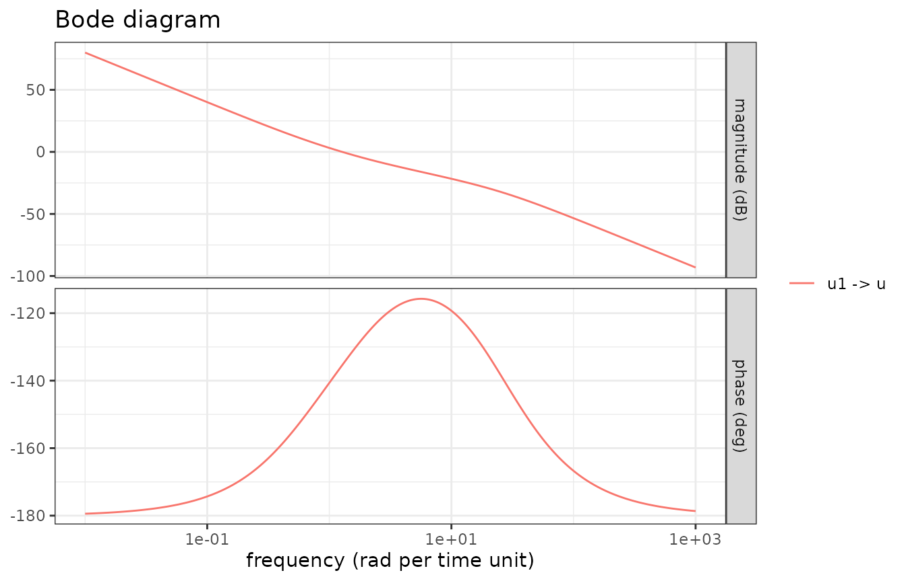
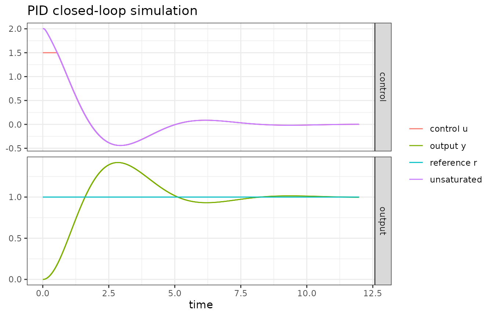
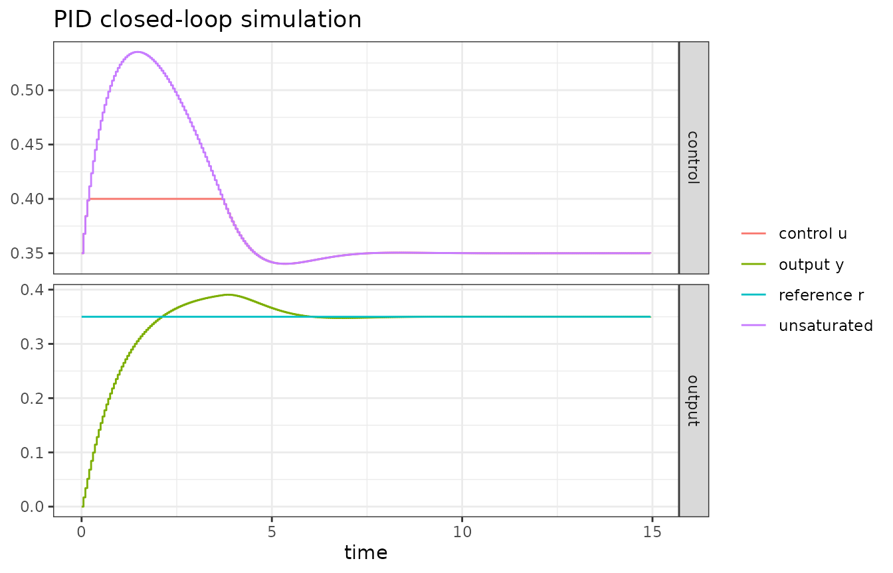
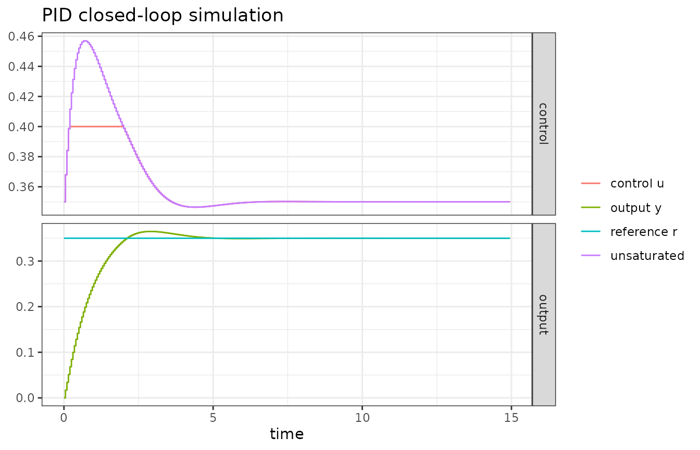

A textbook PID law k_p e + k_i \int e + k_d
\dot e is not implementable as written: the derivative is
improper, amplifies measurement noise without bound, and the integrator
winds up whenever the actuator saturates. ctrl_pid()
therefore always includes the features a working controller needs:
u = k_p (b\,r - y) + k_i \int (r - y)\,dt + k_d \frac{d}{dt} \frac{c\,r - y}{T_f s + 1},
with setpoint weights b and c (the default
c = 0 avoids a derivative kick on setpoint steps), a
derivative filter Tf, output saturation and
anti-windup.
Defining a controller
pid <- ctrl_pid(kp = 2, ki = 1, kd = 0.8, derivative_filter = 10,
u_min = -1.5, u_max = 1.5, dt = 0.02)
pid
#> PID controller (discrete, dt = 0.02)
#> kp = 2, ki = 1, kd = 0.8, Tf = 0.04
#> setpoint weights b = 1, c = 0
#> saturation [-1.5, 1.5], anti-windup: backcalcderivative_filter = N sets T_f
= T_d / N with T_d = k_d / k_p.
Asking for a derivative term without a filter is an error. The standard
(ISA) form uses T_i and T_d:
ctrl_pid(kp = 2, ki = 4, kd = 0.25, form = "standard", derivative_filter = 8)
#> PID controller (continuous description)
#> kp = 2, ki = 0.5, kd = 0.5, Tf = 0.03125
#> setpoint weights b = 1, c = 0
#> saturation [-Inf, Inf], anti-windup: backcalcLinear analysis
Ignoring saturation, ctrl_pid_tf() returns the
controller as a transfer function. A controller without a sample
interval gives the continuous design; with one it is the exact discrete
equivalent of the implemented difference equations (forward Euler
integral, backward Euler derivative filter), so its margins, computed
against the zero-order-hold plant, are those of the code that runs:
plant <- ctrl_tf(1, c(1, 1, 0))
C <- ctrl_pid_tf(ctrl_pid(kp = 2, ki = 1, kd = 0.8, derivative_filter = 10))
C
#> Transfer function (continuous time)
#>
#> 22 s^2 + 51 s + 25
#> ---------------------------
#> s^2 + 25 s
L <- C * plant
ctrl_margin(L)
#> Stability margins (unity negative feedback)
#> gain margin: Inf (Inf dB) at w = NA
#> phase margin: 44.58 deg at w = 1.275
#> delay margin: 0.6104
#> nominal closed loop stable: TRUE
plot(ctrl_bode(L))
Cd <- ctrl_pid_tf(ctrl_pid(kp = 2, ki = 1, kd = 0.8, derivative_filter = 10,
dt = 0.02))
ctrl_margin(Cd * ctrl_c2d(plant, 0.02))
#> Stability margins (unity negative feedback)
#> gain margin: 104.4 (40.37 dB) at w = 40.67
#> phase margin: 43.82 deg at w = 1.276
#> delay margin: 0.5995
#> nominal closed loop stable: TRUEThe sampled loop loses a little phase (the hold behaves like a delay of half a sample), which is why the discrete margins are slightly smaller.
Closed-loop simulation with saturation
ctrl_simulate_pid() runs the discrete controller against
the plant (a continuous plant is discretized exactly with a zero-order
hold at the controller sample interval):
sim <- ctrl_simulate_pid(plant, pid, reference = 1, steps = 600)
plot(sim)
ctrl_performance(sim$time, sim$y, sim$r, u = sim$u, u_min = -1.5, u_max = 1.5)
#> IAE ISE ITAE RMSE control_effort max_abs_u max_violation
#> 1 1.96389 1.001498 4.29645 0.29033 2.388996 1.5 0A plant with direct feedthrough makes the measurement depend on the input of the same sample. The controller output before saturation is affine in the measurement, so the simulator solves this algebraic loop exactly (with saturation) instead of inserting a hidden delay:
lead <- ctrl_c2d(ctrl_tf(c(0.5, 1), c(1, 1)), pid$dt) # D = 0.5
sim_ft <- ctrl_simulate_pid(lead, ctrl_pid(kp = 1, ki = 2, dt = pid$dt),
reference = 1, steps = 5)
sim_ft[, c("time", "y", "u")]
#> time y u
#> 1 0.00 0.3333333 0.6666667
#> 2 0.02 0.3466225 0.6800441
#> 3 0.04 0.3597357 0.6930661
#> 4 0.06 0.3726728 0.7057395
#> 5 0.08 0.3854339 0.7180715Anti-windup
When the actuator saturates, an unprotected integrator keeps growing
and the response overshoots badly once the error changes sign.
Back-calculation feeds the difference between the saturated and
unsaturated outputs back into the integrator with gain kt;
clamping stops integration while the output is saturated in the
direction of the error:
plant2 <- ctrl_tf(1, c(1, 1))
mk <- function(aw) ctrl_pid(kp = 1, ki = 2, u_min = -0.4, u_max = 0.4,
antiwindup = aw, dt = 0.05)
runs <- lapply(c(none = "none", backcalc = "backcalc", clamp = "clamp"),
function(aw) ctrl_simulate_pid(plant2, mk(aw), reference = 0.35,
steps = 300))
sapply(runs, function(s) c(overshoot = max(s$y) - 0.35, max_integrator = max(s$I)))
#> none backcalc clamp
#> overshoot 0.0406833 0.01488736 0.01113191
#> max_integrator 0.5183408 0.39461983 0.38336489
plot(runs$none)
plot(runs$backcalc)
Bumpless transfer
In manual mode the controller output follows an operator value while the integrator tracks it, so switching to automatic mode does not cause a jump:
manual <- c(rep(0.2, 100), rep(NA, 200))
sim_bt <- ctrl_simulate_pid(plant2, ctrl_pid(kp = 1, ki = 1, dt = 0.05),
reference = 0.5, steps = 300, manual = manual)
sim_bt$u[99:102]
#> [1] 0.2000000 0.2000000 0.1999309 0.2149359Tuning rules
Tuning rules are heuristics and starting points. The Ziegler-Nichols
frequency-response rule uses the ultimate gain and period (from the gain
margin and phase crossover); SIMC and AMIGO use a first-order plus
dead-time model, which ctrl_fit_fopdt() estimates from a
step response:
plant3 <- ctrl_tf(1, c(1, 3, 3, 1))
fit <- ctrl_fit_fopdt(plant3)
fit
#> K tau theta
#> 1.00000 86.53948 17.93607
zn <- ctrl_pid_tune("ziegler_nichols", plant = plant3, derivative_filter = 10,
dt = 0.05)
simc <- ctrl_pid_tune("simc", fopdt = fit, dt = 0.05)
amigo <- ctrl_pid_tune("amigo", fopdt = fit, dt = 0.05)
ctrl_compare_controllers(list(
ziegler_nichols = function() ctrl_simulate_pid(plant3, zn, steps = 600),
simc = function() ctrl_simulate_pid(plant3, simc, steps = 600),
amigo = function() ctrl_simulate_pid(plant3, amigo, steps = 600)
), reference = 1)
#> controller IAE ISE ITAE RMSE control_effort
#> 1 ziegler_nichols 2.299335 1.253245 5.685068 0.2064175 55.31573
#> 2 simc 8.310740 2.986853 110.440255 0.3169194 22.66202
#> 3 amigo 13.100333 6.205627 177.892905 0.4558494 12.16790
#> max_abs_u max_violation
#> 1 5.267316 0
#> 2 2.414330 0
#> 3 1.154471 0Ziegler-Nichols is aggressive (low damping); SIMC and AMIGO trade speed for robustness. Always check margins and a simulation with realistic saturation and noise before using a tuned controller.